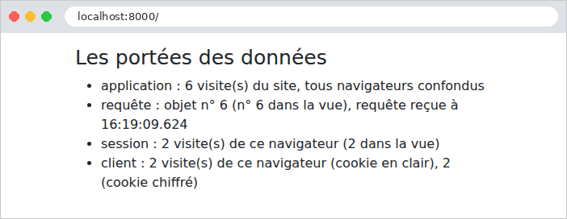

6. Portées des données
Une application web sert de nombreux utilisateurs à la fois, et chacun d'eux enchaîne de nombreuses requêtes. Une donnée peut donc être partagée à plusieurs niveaux, qu'on appelle sa portée :
- la portée application : la donnée est partagée par tous les utilisateurs, pendant toute la vie de l'application (la liste des médecins, par exemple) ;
- la portée requête : la donnée n'existe que le temps de traiter une requête (le modèle d'une vue, l'utilisateur connecté tel qu'il a été reconnu pour cette requête) ;
- la portée session : la donnée est propre à un utilisateur, et doit survivre d'une requête à la suivante (la langue choisie, un panier) ;
- la portée client : une donnée confiée au navigateur lui-même, dans un cookie.
En [PHP], ces portées prennent un tour particulier, parce que l'application est reconstruite à chaque requête (exemple 01) : rien ne survit en mémoire d'une requête à la suivante. Toute donnée qui doit durer plus longtemps qu'une requête est donc rangée hors de [PHP] : dans le cache, une base de données, des fichiers, ou chez le client. C'est la conception dite « sans partage » (*shared nothing*) : chaque requête est traitée isolément, par un processus qui ne partage rien avec ceux qui traitent les autres. Elle a de grands avantages : une erreur n'affecte qu'une requête, aucune donnée ne fuit d'un utilisateur à l'autre, et l'on peut faire tourner plusieurs serveurs identiques derrière un répartiteur de charge, pourvu qu'ils partagent le même cache et la même base.
En [Laravel], chaque portée a son support :
Portée | Support | Durée de vie |
application | le cache (façade [Cache], exemple 20), ou la base de données | la durée choisie, ou sans limite |
requête | les objets du conteneur (un singleton ne vit qu'une requête), les attributs de la requête (exemple 12) | le traitement d'une requête |
session | la session ([$request->session()], [session()]), gardée par le serveur, retrouvée grâce à un cookie | 2 heures d'inactivité par défaut ([SESSION_LIFETIME]) |
client | un cookie ([withCookie], exemple 22), chiffré par défaut | la durée donnée au cookie |
La session de [Laravel] est une session tenue par le serveur, comme celles de [Java] ([JSESSIONID]) ou du [PHP] classique ([PHPSESSID]) : ses données sont rangées sur le serveur (un fichier par session, avec la configuration de nos exemples), et le navigateur n'en détient que l'identifiant, dans un cookie chiffré (exemple 20). C'est une différence avec [Flask], dont la session est rangée tout entière dans un cookie signé, chez le client.
6.1. Exemple 23 : les portées
6.1.1. Les objets : app/Services/CompteurService.php et RequeteInfos.php
- lignes 13-20 : un compteur de portée application : un nombre rangé dans le cache, sous une clé, et augmenté de 1 à chaque appel. Le cache propose une méthode [Cache::increment], mais, avec le magasin « fichier » de nos exemples, elle n'est pas atomique : elle lit la valeur, l'augmente, puis l'écrit, et deux requêtes simultanées pourraient lire la même valeur : une visite serait perdue. Un verrou (exemple 20) protège donc la lecture et l'écriture. (Avec un magasin comme [Redis] ou une base de données, [Cache::increment] est atomique, et le verrou inutile.) La fonction rend la valeur du verrou, qui est celle que rend la fonction qu'il protège ;
- lignes 22-25 : le compteur des visites.
- lignes 8-10 : des propriétés déclarées [readonly] une à une (et non la classe entière) : elles ne peuvent être affectées qu'une fois, par le constructeur ;
- lignes 12-18 : des informations de portée requête : un numéro, tiré d'un compteur commun à toutes les requêtes (le compteur de la classe précédente, sous une autre clé), et l'heure de la requête. La fonction [now()] rend l'instant présent, une date [Carbon] ; le format [v] écrit les millisecondes.
6.1.2. La configuration : bootstrap/app.php
- ligne 18 : le cookie [mesVisites] n'est pas chiffré ; tous les autres le sont (exemple 22) ;
- lignes 22-23 : les deux services sont déclarés au conteneur. [withSingletons] (exemple 06) : un seul objet, créé à la première demande. [withScopedSingletons] : un seul objet par requête. En [PHP] ordinaire, les deux reviennent au même, puisque chaque requête reconstruit l'application et son conteneur. La différence apparaît avec [Laravel Octane], un serveur d'applications qui garde l'application en mémoire d'une requête à l'autre, pour aller plus vite : un singleton y est partagé par toutes les requêtes, un singleton « scopé » est recréé pour chacune. Déclarer la portée voulue rend le code correct dans les deux cas.
6.1.3. Le contrôleur : app/Http/Controllers/PorteesController.php
- ligne 14 : l'action reçoit la requête et les deux services, fournis par le conteneur ;
- ligne 17 : la portée application ;
- ligne 20 : la portée session. [$request->session()] rend la session de l'utilisateur ; sa méthode [increment] augmente de 1 la valeur d'une clé (0 si elle est absente), et rend la nouvelle valeur. On lit une valeur par [get('visites')], on l'écrit par [put('visites', 3)] ; la fonction [session('visites')] est un raccourci pour la lecture. [Laravel] enregistre la session à la fin de la requête (le middleware [StartSession] du groupe [web]) ;
- lignes 23-24 : la portée client, avec deux cookies. Leurs valeurs sont des chaînes, fournies par le navigateur, et donc peut-être absentes ou invalides : la conversion [(int)] rend 0 pour [null] ou pour un texte qui n'est pas un nombre ;
- lignes 25-30 : pour déposer un cookie, il faut l'objet réponse : [response()->view(...)] le construit à partir de la vue (exemple 13), puis [withCookie] lui ajoute les cookies. Sans durée, un cookie dure jusqu'à la fermeture du navigateur (c'est un cookie « de session », au sens des navigateurs).
6.1.4. La vue : resources/views/portees/portees.blade.php
- ligne 13 : la directive [@inject] demande un objet au conteneur, depuis la vue, et le range dans une variable (ici [$infos]). Pendant une même requête, c'est le même objet [RequeteInfos] que celui de l'action : la vue affiche son numéro, qui doit être celui reçu de l'action ;
- ligne 18 : la session est aussi accessible dans les vues.
6.1.5. Exécution
Après quelques visites, dans un navigateur :

Suivons les requêtes avec [curl], qui joue le rôle d'un premier navigateur en conservant ses cookies dans le fichier [a.txt] :
La réponse dépose quatre cookies. Le premier, [mesVisites], contient la valeur en clair. Le second, [mesVisitesChiffre], contient la même valeur, chiffrée : la partie visible est un document JSON codé en base 64, qui contient le vecteur d'initialisation du chiffrement ([iv]), la valeur chiffrée ([value]) et un code d'authentification ([mac]), qui garantit que la valeur n'a pas été modifiée. Les deux derniers sont ceux de la session et de la protection anti-CSRF (exemple 20). Une seconde visite, avec les mêmes cookies :
Un second « navigateur », avec son propre fichier de cookies, vide au départ :
Le compteur de l'application a continué ; la session et les cookies du second navigateur repartent de 1. Chaque requête a eu son propre objet [RequeteInfos], et, dans chacune, l'action et la vue ont vu le même. Enfin, un utilisateur malhonnête fabrique ses cookies : 1000 visites dans [mesVisites], 999 dans [mesVisitesChiffre], et un identifiant de session de son invention :
Le cookie en clair a été accepté tel quel : 1001 visites. Le cookie [mesVisitesChiffre], lui, n'a pas pu être déchiffré : [Laravel] l'a ignoré, comme s'il était absent. Il en va de même du cookie de session : l'utilisateur ne peut pas choisir la session d'un autre, et reçoit une session neuve. C'est toute la différence entre un cookie ordinaire et un cookie chiffré. Retenons-en la règle : une donnée venue du client n'est digne de confiance que si elle est protégée par le serveur (chiffrée, comme ici, ou signée, comme le jeton du chapitre sur l'authentification) ; les données qui n'ont rien à cacher, et dont le serveur vérifie la valeur (la langue de l'exemple 22), peuvent rester en clair.